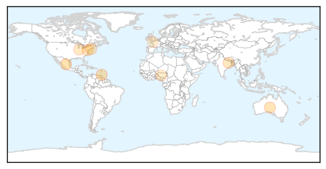
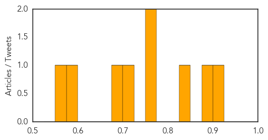

Pertussis
30-Day Web Trend
0 alerts, 0 warnings

30-Day Twitter Trend
0 alerts, 0 warnings
Article Locations

Article Confidences

Top Articles:
Top Tweets:
-
No tweets found for Jul 25, 2014
Hepatitis
30-Day Web Trend
4 alerts, 0 warnings

30-Day Twitter Trend
0 alerts, 0 warnings

Article Locations
Article Confidences
Top Articles:
- 0.918
- News Scan for Jul 25, 2014
- 0.882
- The Hepatitis C virus is the main cause... -- PORT OF SPAIN, Trinidad and Tobago, July 25, 2014 /PRNewswire/ --
- 0.842
- World Hepatitis Day Highlights Need to Test Seniors for the Virus
- 0.756
- Sachin Tendulkar to Fight against Water Borne Diseases
- 0.750
- Health Commissioner to Residents: Know about Hepatitis, Know Your Status
- 0.711
- Health Commissioner to Residents: Know about Hepatitis, Know Your Status
- 0.694
- World Hepatitis Day reminds Hoosiers to ‘Think Again’ about the virus
- 0.599
- Poor funding responsible for hepatitis deaths in Nigeria –Group
- 0.561
- World Hepatitis Day is Monday, July 28th: More Than 150,000 People in New Jersey Are Living with Hepatitis C
Top Tweets:
-
No tweets found for Jul 25, 2014